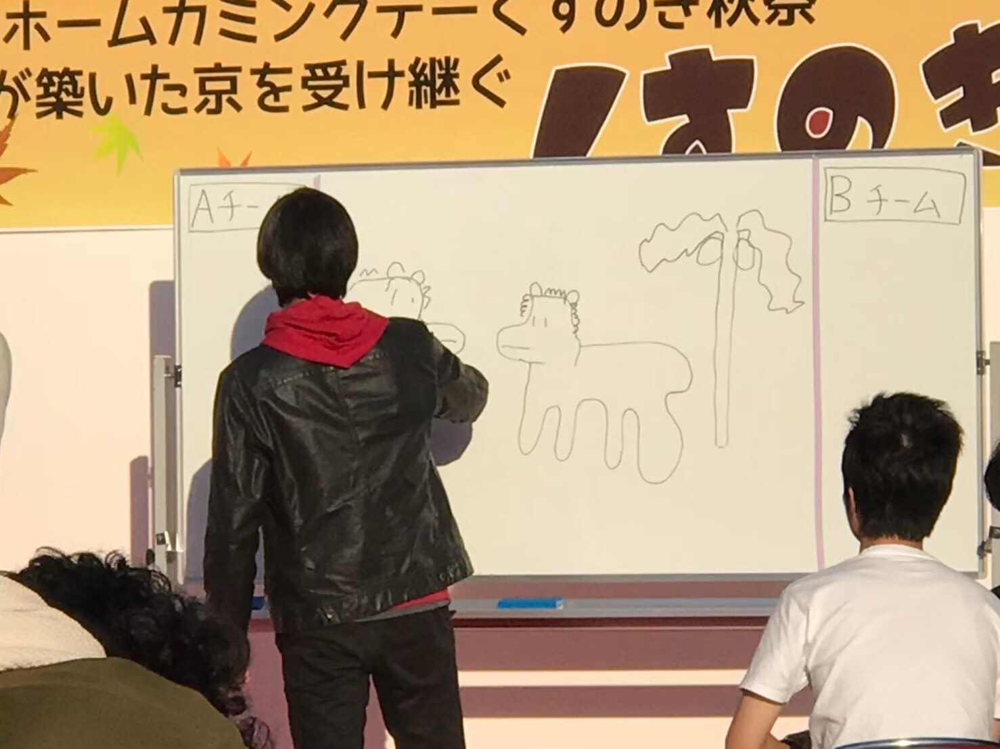
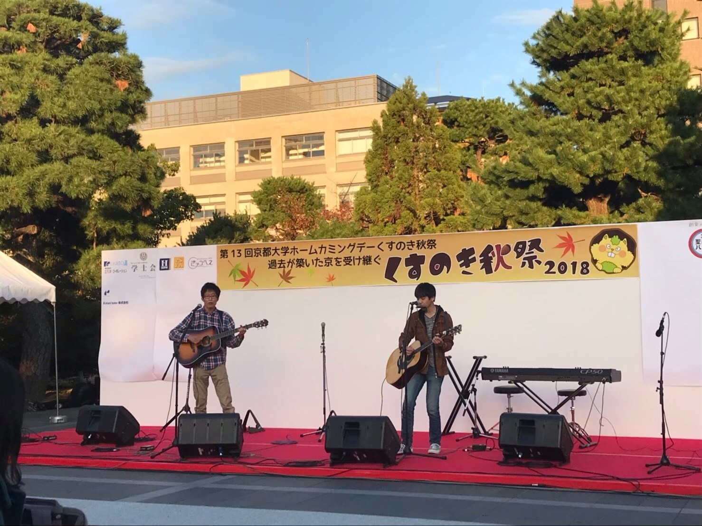

- 
- 
※写真は過年度のものです
ステージ
・タイムテーブル

・ゲスト紹介
綾辻行人さん

1960年生まれ、京都市出身の小説家。ミステリー＆ホラーを専門としている。京都府立桂高等学校を経て京都大学教育学部、教育学研究科に進学し、在学中は京大推理小説研究会に所属していた。在学中に『十角館の殺人』で作家デビューし、1992年に『時計館の殺人』で日本推理作家協会賞を受賞した。その後も「館シリーズ」や『Another』など数々の著作を発表している。
川島実さん

1974年生まれ、奈良出身の医師。京都大学医学部医学科へ進学。６年時にプロボクサーとしてデビューし、２年後ウェルター級西日本新人王を獲得する。プロボクサーとして活躍する傍らで医師国家試験にも合格。29歳でボクサーを引退後、地域医療に携わる。東日本大震災直後から、宮城県気仙沼市立本吉病院へボランティアとして通い、その後病院長に就任。現在は退職して奈良に戻り、フリーランスの医師として活動している。2014年、東大寺で在家僧侶の資格を取得。
山本周雅さん

1997年生まれ、京都府宮津市出身で現在総合人間学部の３回生。クラウドファンディングを実施し、2019年５月に百万遍で語り×bar「katharsis（カタルシス）」をオープン、代表を務める。７月には祇園に２号店もオープンした。